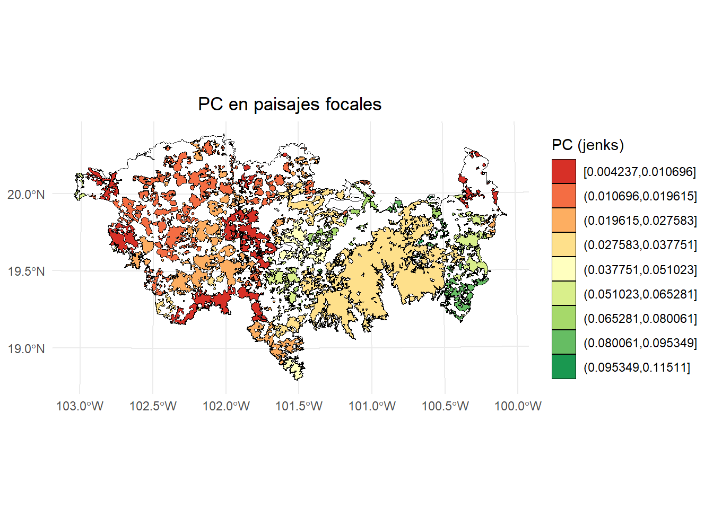
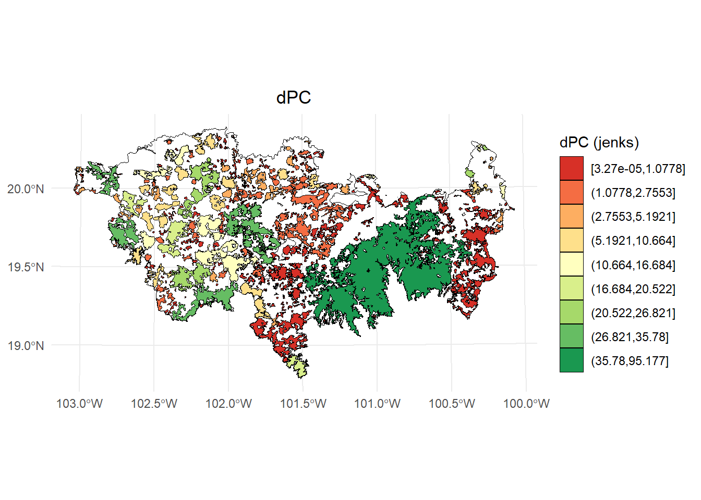
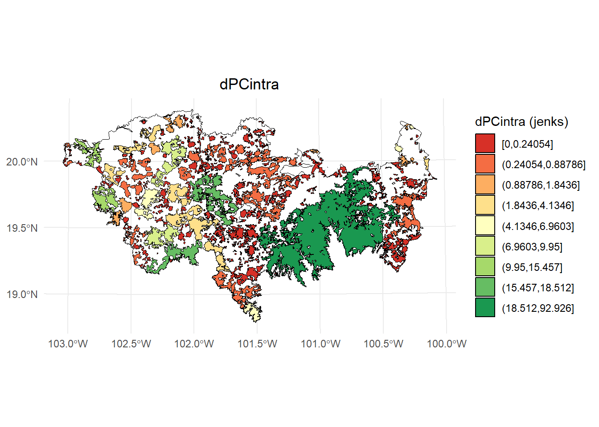
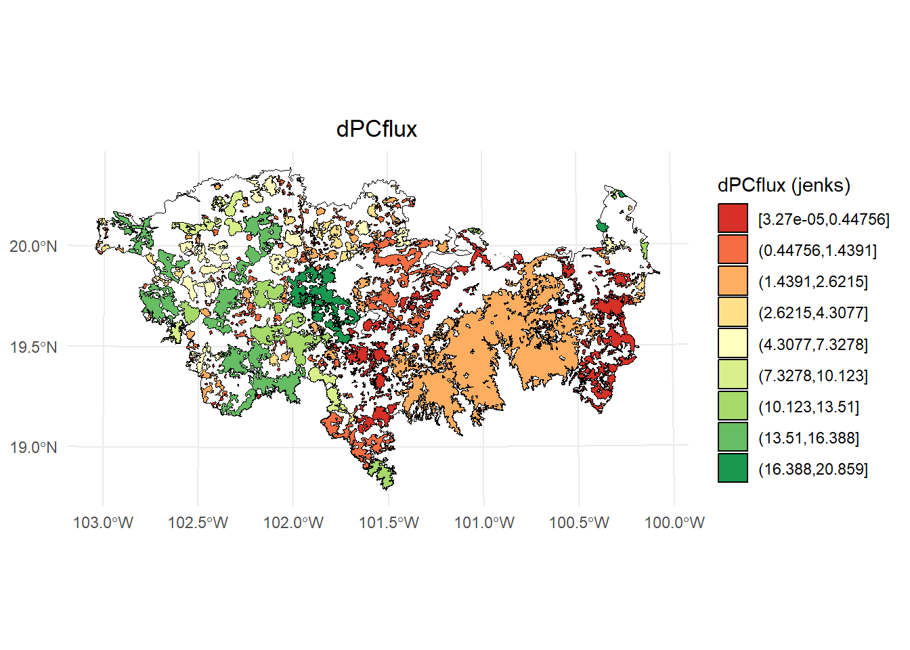
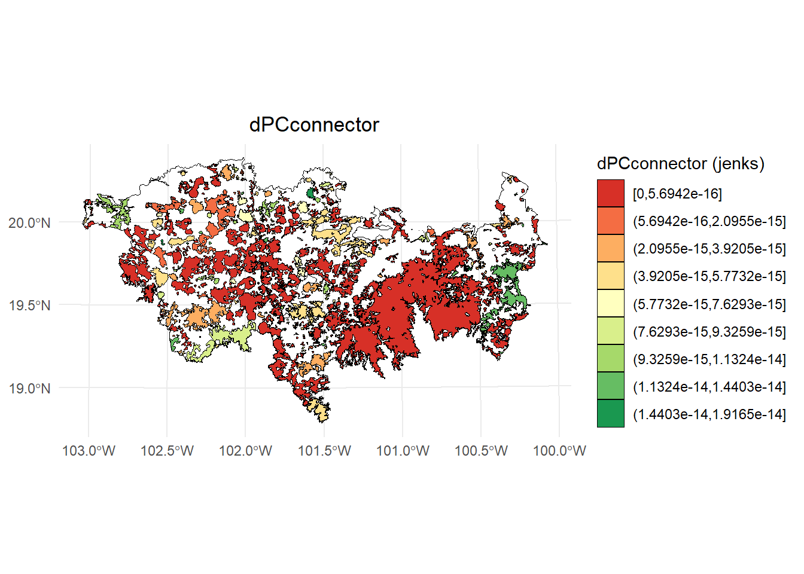
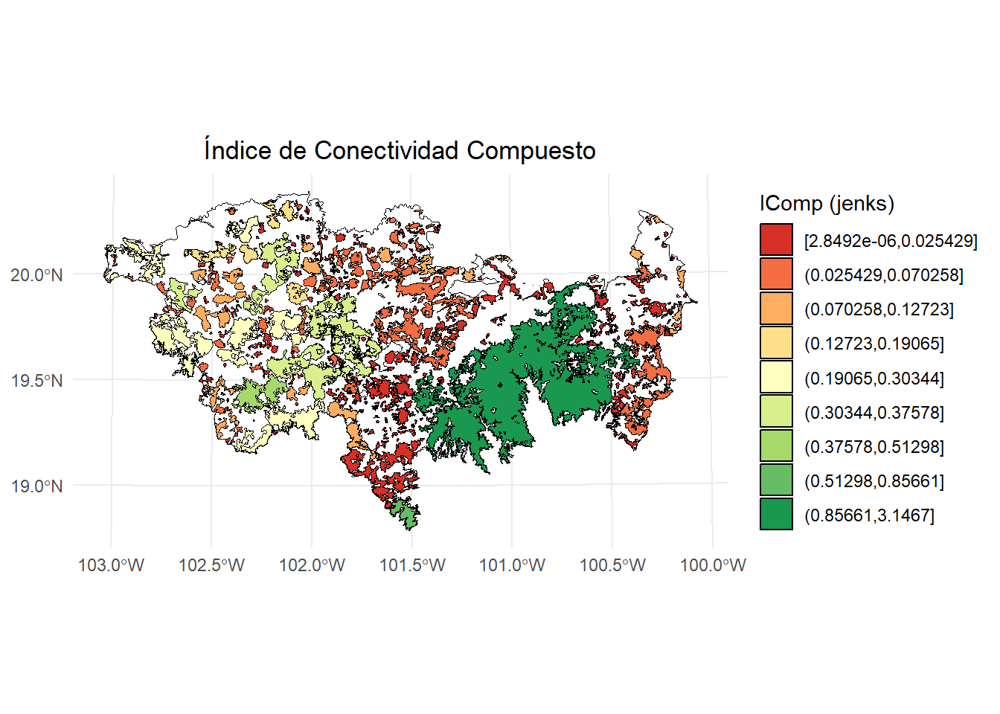

Chapter 6 Prioridades de conservación y restauración con MK_Focal_nodes()
Esta función permite calcular el Índice Integral de Conectividad focal (IICf) o la Probabilidad de Conectividad focal (PCf) bajo uno o más umbrales de distancia. Además, esta función estima el Índice de Conectividad Compuesto (CCIf; para más detalles, véase Latorre-Cárdenas et al., 2023. Land 2023, 12(3), 631; https://doi.org/10.3390/land12030631).
| Argumento | Descripción |
|---|---|
nodes |
sf, SpatVector o SpatialPolygonsDataFrame. Objeto que contiene los nodos (por ejemplo, fragmentos de hábitat) a analizar. Deben estar en un sistema de coordenadas proyectado. |
id |
character. Nombre de la columna con el ID del nodo. |
attribute |
character o vector. Si es NULL, se usará el área del nodo como atributo. Se puede definir la unidad con area_unit. Si se desea usar un atributo diferente, especificar el nombre de la columna correspondiente. |
raster_attribute |
raster o rast. Objeto raster usado para asignar valores de atributo a cada nodo mediante la función definida en fun_attribute. |
fun_attribute |
function. Función para calcular el atributo del nodo a partir del raster. Aplica la función (e.g., mean, sum, modal, min, max) a los valores extraídos. Valor por defecto: mean. |
weighted |
logical. Si raster_attribute y weighted son TRUE, el valor del atributo raster para cada nodo se multiplica por su área. |
area_unit |
character. (opcional, por defecto = "m2"). Indica la unidad del área cuando attribute es NULL. Opciones: “m2”, “km2”, “cm2”, “ha”. |
distance |
Lista de parámetros para establecer la distancia entre pares de nodos. Puede ser distancia euclidiana o efectiva (costos). Debe incluir por lo menos "type" y "resistance" si es necesario. Ejemplo: distance(type = "least-cost", resistance = raster_resistance). |
metric |
character. Métrica de conectividad: "PC" (por defecto) o "IIC". |
probability |
numérico. Probabilidad asociada a distance_threshold. Por ejemplo, 0.5 si es distancia mediana de dispersión. Solo se usa si metric = "PC". Si es NULL, se usa 0.5. |
distance_thresholds |
numérico. Distancia(s) de dispersión en metros. Si es NULL, se estima como la mediana de dispersión entre nodos. Puede usarse la función dispersal_distance. |
search_buffer |
numérico. Distancia para crear un buffer alrededor del nodo focal, usado para seleccionar nodos vecinos. Puede variar según el umbral de dispersión. |
simplify_shape |
numérico. Simplifica la forma del nodo focal eliminando vértices antes de aplicar el buffer. Útil para nodos con geometrías complejas. Usa st_simplify. |
fragmentation |
logical. Estima estadísticas de fragmentación usando MK_Fragmentation. Requiere edge_distance y min_node_area. |
edge_distance |
numérico. Distancia al borde en metros. Por defecto 500 m. |
min_node_area |
numérico. Área mínima (en unidades definidas por area_unit) usada para contar nodos con menor área. Por defecto 100 km². |
parallel |
numérico (opcional). Número de núcleos para paralelizar el cálculo de PC o IIC y sus deltas. Útil para >1000 nodos. Por defecto no se paraleliza. |
write |
character. Ruta y prefijo inicial para guardar los objetos, por ejemplo: "C:/ejemplo/test_focal_". Si no se especifica, no se guarda nada. |
save_subfiles |
logical o character. Si es TRUE, guarda los resultados por nodo en formato .rds en la ruta de write. Si es un path, debe indicar la carpeta. Útil si hay errores topológicos. Permite reanudar el análisis después de corregir el error. |
intern |
logical. Muestra el progreso del proceso. Por defecto TRUE. Puede no llegar al 100% si el proceso es muy rápido. |
Se ejecuta un ciclo en el que se selecciona cada uno de los nodos. En cada iteración, ocurre lo siguiente:
Cuando se selecciona el nodo i, este se convierte en el nodo focal (f).
Luego, se genera un búfer con la distancia especificada en el parámetro
search_buffer, por ejemplo, el doble de la distancia de dispersión especificada en el parámetrodistance_thresholds. Este búfer se denomina paisaje local y se utiliza para identificar nodos vecinos, llamados nodos transfronterizos (th).A continuación, se estima el índice IIC o PC según la métrica seleccionada, utilizando el nodo focal y los nodos transfronterizos. Este resultado se denomina IICf o PCf. El valor del índice varía entre 0 y 1, donde 1 representa la mayor conectividad posible dentro del paisaje local para el nodo focal.
Posteriormente, se estima el delta dIIC o dPC para el nodo focal, junto con sus componentes intra, flux y connector.
La función calcula el Índice Compuesto de Conectividad (CCIf) como una herramienta de priorización de nodos focales. Este índice se basa en la contribución individual del nodo, ponderada por la conectividad de su paisaje local:
- CCIf = IICf × dIICf
- CCIf = PCf × dPCf
Los nodos con valores más altos de CCIf se encuentran en paisajes locales bien conectados, lo que los convierte en contribuyentes valiosos para la conectividad del paisaje inmediato. Esto los hace candidatos ideales para esfuerzos de conservación. Por el contrario, los valores bajos de CCIf pueden indicar la necesidad de acciones de restauración y conservación.
En el paso final, si el parámetro
fragmentationestá definido comoTRUE, se estiman estadísticas de fragmentación para el paisaje local.
Este proceso se repite para cada nodo y se almacena en un objeto de clase sf.
test <- MK_Focal_nodes(nodes = habitat_nodes,
id = "Id",
attribute = NULL,
raster_attribute = NULL,
fun_attribute = NULL,
distance = list(type = "edge", keep = 0.1),
metric = "PC",
probability = 0.5,
distance_thresholds = 10000,
search_buffer = 20000,
fragmentation = FALSE,
parallel = 4,
intern = FALSE)Índice PC en paisajes focales:
library(classInt)
library(dplyr)
#>
#> Adjuntando el paquete: 'dplyr'
#> The following objects are masked from 'package:igraph':
#>
#> as_data_frame, groups, union
#> The following objects are masked from 'package:raster':
#>
#> intersect, select, union
#> The following objects are masked from 'package:terra':
#>
#> intersect, union
#> The following objects are masked from 'package:stats':
#>
#> filter, lag
#> The following objects are masked from 'package:base':
#>
#> intersect, setdiff, setequal, union
# Calcular los intervalos de Jenks para strength
breaks <- classInt::classIntervals(test$PC, n = 9, style = "jenks")
# Crear una nueva variable categórica con los intervalos
PC <- test %>%
mutate(dPC_q = cut(PC,
breaks = breaks$brks,
include.lowest = TRUE,
dig.lab = 5))
# Graficar en ggplot2 usando las clases Jenks
ggplot() +
geom_sf(data = paisaje, fill = NA, color = "black") +
geom_sf(data = PC, aes(fill = dPC_q), color = "black", size = 0.1) +
scale_fill_brewer(palette = "RdYlGn", direction = 1, name = "PC (jenks)") +
theme_minimal() +
labs(
title = "PC en paisajes focales",
fill = "PC"
) +
theme(
legend.position = "right",
plot.title = element_text(hjust = 0.5)
)
Índice dPC focal:
# Calcular los intervalos de Jenks para strength
breaks <- classInt::classIntervals(test$dPC, n = 9, style = "jenks")
# Crear una nueva variable categórica con los intervalos
PC <- test %>%
mutate(dPC_q = cut(dPC,
breaks = breaks$brks,
include.lowest = TRUE,
dig.lab = 5))
# Graficar en ggplot2 usando las clases Jenks
ggplot() +
geom_sf(data = paisaje, fill = NA, color = "black") +
geom_sf(data = PC, aes(fill = dPC_q), color = "black", size = 0.1) +
scale_fill_brewer(palette = "RdYlGn", direction = 1, name = "dPC (jenks)") +
theme_minimal() +
labs(
title = "dPC",
fill = "dPC"
) +
theme(
legend.position = "right",
plot.title = element_text(hjust = 0.5)
)
Fracción intra:
# Calcular los intervalos de Jenks para strength
breaks <- classInt::classIntervals(test$dPCintra, n = 9, style = "jenks")
# Crear una nueva variable categórica con los intervalos
PC <- test %>%
mutate(dPC_q = cut(dPCintra,
breaks = breaks$brks,
include.lowest = TRUE,
dig.lab = 5))
# Graficar en ggplot2 usando las clases Jenks
ggplot() +
geom_sf(data = paisaje, fill = NA, color = "black") +
geom_sf(data = PC, aes(fill = dPC_q), color = "black", size = 0.1) +
scale_fill_brewer(palette = "RdYlGn", direction = 1, name = "dPCintra (jenks)") +
theme_minimal() +
labs(
title = "dPCintra",
fill = "dPCintra"
) +
theme(
legend.position = "right",
plot.title = element_text(hjust = 0.5)
)
Fracción flux:
# Calcular los intervalos de Jenks para strength
breaks <- classInt::classIntervals(test$dPCflux, n = 9, style = "jenks")
# Crear una nueva variable categórica con los intervalos
PC <- test %>%
mutate(dPC_q = cut(dPCflux,
breaks = breaks$brks,
include.lowest = TRUE,
dig.lab = 5))
# Graficar en ggplot2 usando las clases Jenks
ggplot() +
geom_sf(data = paisaje, fill = NA, color = "black") +
geom_sf(data = PC, aes(fill = dPC_q), color = "black", size = 0.1) +
scale_fill_brewer(palette = "RdYlGn", direction = 1, name = "dPCflux (jenks)") +
theme_minimal() +
labs(
title = "dPCflux",
fill = "dPCflux"
) +
theme(
legend.position = "right",
plot.title = element_text(hjust = 0.5)
)
Fracción connector:
# Calcular los intervalos de Jenks para strength
breaks <- classInt::classIntervals(test$dPCconnector, n = 9, style = "jenks")
# Crear una nueva variable categórica con los intervalos
PC <- test %>%
mutate(dPC_q = cut(dPCconnector,
breaks = breaks$brks,
include.lowest = TRUE,
dig.lab = 5))
# Graficar en ggplot2 usando las clases Jenks
ggplot() +
geom_sf(data = paisaje, fill = NA, color = "black") +
geom_sf(data = PC, aes(fill = dPC_q), color = "black", size = 0.1) +
scale_fill_brewer(palette = "RdYlGn", direction = 1, name = "dPCconnector (jenks)") +
theme_minimal() +
labs(
title = "dPCconnector",
fill = "dPCconnector"
) +
theme(
legend.position = "right",
plot.title = element_text(hjust = 0.5)
)
Índice de Conectividad Compuesto (CCIf).
No olvidemos que es una herramienta para priorizar cada parche focal en función de su contribución individual a la conectividad en la red de parches f y thp (dPCf) y la conectividad del paisaje de toda la red (PCf). En ese sentido, los parches con valores CCI más altos se encuentran en un paisaje bien conectado y su contribución a la conectividad se considera importante:
# Calcular los intervalos de Jenks para strength
breaks <- classInt::classIntervals(test$IComp, n = 9, style = "jenks")
# Crear una nueva variable categórica con los intervalos
PC <- test %>%
mutate(dPC_q = cut(IComp,
breaks = breaks$brks,
include.lowest = TRUE,
dig.lab = 5))
# Graficar en ggplot2 usando las clases Jenks
ggplot() +
geom_sf(data = paisaje, fill = NA, color = "black") +
geom_sf(data = PC, aes(fill = dPC_q), color = "black", size = 0.1) +
scale_fill_brewer(palette = "RdYlGn", direction = 1, name = "IComp (jenks)") +
theme_minimal() +
labs(
title = "Índice de Conectividad Compuesto",
fill = "IComp"
) +
theme(
legend.position = "right",
plot.title = element_text(hjust = 0.5)
)